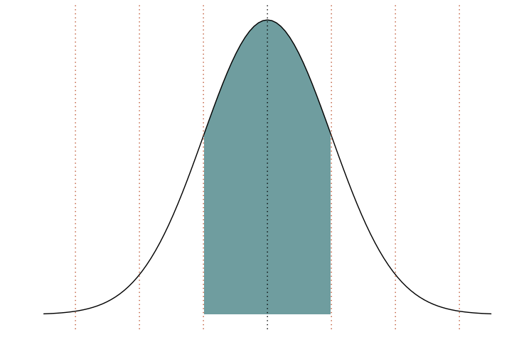
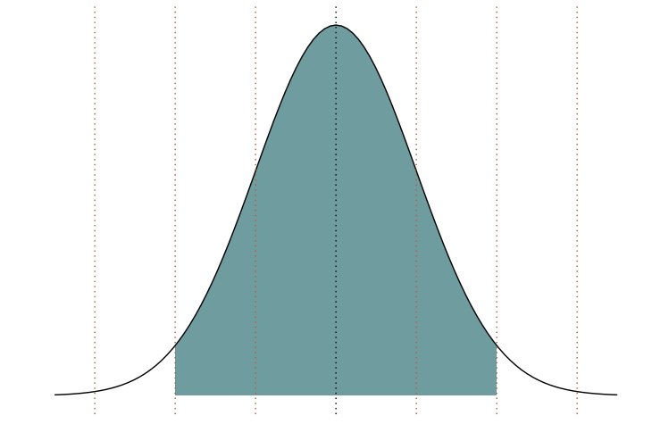
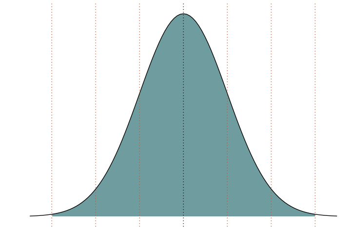
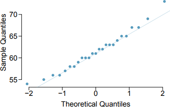

Exercise 3.18
From Open Stats Intro
Height of 25 Female College Students
| 1 | 2 | 3 | 4 | 5 | ... | 21 | 22 | 23 | 24 | 25 |
|---|---|---|---|---|---|---|---|---|---|---|
| 54 | 55 | 56 | 56 | 57 | ... | 65 | 67 | 67 | 69 | 73 |
(a) 68-95-99.7% Rule
Given:
μ = 61.52 inches
σ = 4.58 inches
Do the heights approximately follow the
68-95-99.7% Rule?
68-95-99.7% Rule?
AKA the empirical rule
Percentage of values that lie within a band around the mean in a normal distribution
68-95-99.7% Rule
68-95-99.7% Rule
68-95-99.7% Rule
Approach
heights <- c(54, 55, 56, 56, 57, 58, 58, 59, 60, 60, 60, 61, 61, 62, 62, 63, 63, 63, 64, 65, 65, 67, 67, 69, 73)
mu <- mean(heights)
sigma <- sd(heights)
for(n_sigma in 1:3){
# Return a Boolean vector
boolean_vector <- heights < (mu + n_sigma * sigma) & heights > (mu + -n_sigma * sigma)
# Count the TRUEs
n_true <- length(boolean_vector[boolean_vector == TRUE])
# Share TRUE
print(n_true / length(heights))
}
Results
| Share of Observations Within | |
|---|---|
| 1 σ | 68% |
| 2 σ | 96% |
| 3 σ | 100% |
Conclusion
Yes, these observation roughly follow the 68-95-99.7% Rule.
(b) Normally Distributed?
Do these data appear to follow a normal distribution? Explain your reasoning using the graphs provided below.

Answer
Yes, the data appear to be normally distributed. The dots on the Q-Q plot are more or less on the line.